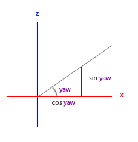

Camera
Computer Graphics - OpenGL
Camera
Introduction
In the previous class we discussed the view matrix and how we can use the view matrix to move around the scene (we moved backwards a little).
OpenGL by itself is not familiar with the concept of a camera.
However, we can try to simulate one by moving all objects in the scene in the reverse direction, giving the illusion that we are moving.
What We’ll Cover
Throughout this class we will discuss how we can set up a camera in OpenGL.
Also, we will discuss an FPS-style camera that allows you to freely move around in a 3D scene.
Finally we will also discuss keyboard and mouse input and finish with a custom camera class.
Camera/View Space
Understanding Camera Space
When we’re talking about camera/view space we’re talking about all the vertex coordinates as seen from the camera’s perspective as the origin of the scene: the view matrix transforms all the world coordinates into view coordinates that are relative to the camera’s position and direction.
Defining a Camera
To define a camera we need:
- Its position in world space
- The direction it’s looking at
- A vector pointing to the right
- A vector pointing upwards from the camera
In fact we are actually going to create a coordinate system with 3 perpendicular unit axes with the camera’s position as the origin.
Camera Coordinate System

1. Camera Position
Getting a camera position is easy. The camera position is basically a vector in world space that points to the camera’s position. We set the camera at the same position we’ve set the camera in the previous class:
Note
Don’t forget that the positive z-axis is going through your screen towards you so if we want the camera to move backwards, we move along the positive z-axis.
2. Camera Direction
The next vector required is the camera’s direction e.g. at what direction it is pointing at.
For now we let the camera point to the origin of our scene: (0,0,0).
Remember that if we subtract two vectors from each other we get a vector that’s the difference of these two vectors?
Subtracting the camera position vector from the scene’s origin vector thus results in the direction vector.
Camera Direction Calculation
Since we know that the camera points towards the negative z direction we want the direction vector to point towards the camera’s positive z-axis.
If we switch the subtraction order around we now get a vector pointing towards the camera’s positive z-axis:
glm::vec3 cameraTarget = glm::vec3(0.0f, 0.0f, 0.0f);
glm::vec3 cameraDirection = glm::normalize(cameraPos - cameraTarget);Warning
The name direction vector is not the best chosen name, since it is actually pointing in the reverse direction of what it is targeting.
3. Right Axis
The next vector we need is a right vector that represents the positive x-axis of the camera space.
To get the right vector we use a little trick by first specifying an up vector that points upwards (in world space).
Then we do a cross product on the up vector and the direction vector from step 2.
Calculating Right Vector
Since the result of a cross product is a vector perpendicular to both vectors, we will get a vector that points to the positive x-axis’s direction (if we would switch the vectors we’d get a vector that points in the negative x-axis):
4. Up Axis
Now that we have both the x-axis vector and the z-axis vector, retrieving the vector that points in the camera’s positive y-axis is relatively easy: we take the cross product of the right and direction vector:
Gram-Schmidt Process
With the help of the cross product and a few tricks we were able to create all the vectors that form the view/camera space.
For the more mathematically inclined readers, this process is known as the Gram-Schmidt process in linear algebra.
Using these camera vectors we can now create a LookAt matrix that proves very useful for creating a camera.
Look At
Coordinate Space Transformation
A great thing about matrices is that if you define a coordinate space using 3 perpendicular (or non-linear) axes you can create a matrix with those 3 axes plus a translation vector and you can transform any vector to that coordinate space by multiplying it with this matrix.
LookAt Matrix
This is exactly what the LookAt matrix does and now that we have 3 perpendicular axes and a position vector to define the camera space we can create our own LookAt matrix:
\[LookAt = \begin{bmatrix} \color{red}{R_x} & \color{red}{R_y} & \color{red}{R_z} & 0 \\ \color{green}{U_x} & \color{green}{U_y} & \color{green}{U_z} & 0 \\ \color{blue}{D_x} & \color{blue}{D_y} & \color{blue}{D_z} & 0 \\ 0 & 0 & 0 & 1 \end{bmatrix} * \begin{bmatrix} 1 & 0 & 0 & -\color{purple}{P_x} \\ 0 & 1 & 0 & -\color{purple}{P_y} \\ 0 & 0 & 1 & -\color{purple}{P_z} \\ 0 & 0 & 0 & 1 \end{bmatrix}\]
LookAt Components
Where \(\color{red}R\) is the right vector, \(\color{green}U\) is the up vector, \(\color{blue}D\) is the direction vector and \(\color{purple}P\) is the camera’s position vector.
LookAt Properties
Note that the position vector is inverted since we eventually want to translate the world in the opposite direction of where we want to move.
Using this LookAt matrix as our view matrix effectively transforms all the world coordinates to the view space we just defined.
The LookAt matrix then does exactly what it says: it creates a view matrix that looks at a given target.
GLM LookAt Function
Luckily for us, GLM already does all this work for us.
We only have to specify a camera position, a target position and a vector that represents the up vector in world space (the up vector we used for calculating the right vector). GLM then creates the LookAt matrix that we can use as our view matrix:
Using LookAt
The glm::LookAt function requires a position, a target and up vector respectively. This creates a view matrix that is the same as the one used in previous example.
Before delving into user input, let’s get a little funky first by rotating the camera around our scene. We keep target of the scene at (0,0,0).
Circular Camera Movement
We use a little bit of trigonometry to create an x and z coordinate each frame that represents a point on a circle and we’ll use these for our camera position.
By re-calculating the x and z coordinate we’re traversing all the points in a circle and thus the camera rotates around the scene.
Implementing Circular Movement
We enlarge this circle by a pre-defined radius and create a new view matrix each render iteration using SDL3’s SDL_GetTicks function:
Result
Walk Around
Camera System Setup
Swinging the camera around a scene is fun, but it’s more fun to do all the movement by ourselves! First we need to set up a camera system, so it is useful to define some camera variables at the top of our program:
glm::vec3 cameraPos = glm::vec3(0.0f, 0.0f, 3.0f);
glm::vec3 cameraFront = glm::vec3(0.0f, 0.0f, -1.0f);
glm::vec3 cameraUp = glm::vec3(0.0f, 1.0f, 0.0f);The LookAt function becomes:
Camera Direction
First we set the camera position to the previously defined cameraPos. The direction is the current position + the direction vector we just defined.
This ensures that however we move, the camera keeps looking at the target direction. Let’s play a bit with these variables by updating the cameraPos vector when we press some keys.
Keyboard Input Processing
Define a processKeyboard function to manage any of SDL3’s keyboard state:
void processKeyboard()
{
float cameraSpeed = 0.05f; // adjust accordingly
const bool* keyState = SDL_GetKeyboardState(NULL);
if (keyState[SDL_SCANCODE_W])
cameraPos += cameraSpeed * cameraFront;
if (keyState[SDL_SCANCODE_S])
cameraPos -= cameraSpeed * cameraFront;
if (keyState[SDL_SCANCODE_A])
cameraPos -= glm::normalize(glm::cross(cameraFront, cameraUp)) * cameraSpeed;
if (keyState[SDL_SCANCODE_D])
cameraPos += glm::normalize(glm::cross(cameraFront, cameraUp)) * cameraSpeed;
}Movement Mechanics
Whenever we press one of the WASD keys, the camera’s position is updated accordingly.
If we want to move forward or backwards we add or subtract the direction vector from the position vector.
If we want to move sideways we do a cross product to create a right vector and we move along the right vector accordingly.
This creates the familiar strafe effect when using the camera.
Normalization
Note
Note that we normalize the resulting right vector. If we wouldn’t normalize this vector, the resulting cross product might return differently sized vectors based on the cameraFront variable. If we would not normalize the vector we would either move slow or fast based on the camera’s orientation instead of at a consistent movement speed.
Movement Speed
Frame Rate Independence
Currently we used a constant value for movement speed when walking around.
In theory this seems fine, but in practice people have different processing powers and the result of that is that some people are able to draw much more frames than others each second.
Whenever a user draws more frames than another user he also calls processInput more often.
The Problem
The result is that some people move really fast and some really slow depending on their setup.
When shipping your application you want to make sure it runs the same on all kinds of hardware.
Games usually keep track of a deltaTime variable that stores the time it takes to render the last frame.
We then multiply all velocities with this deltaTime value.
Delta Time Solution
The result is that when we have a large deltaTime in a frame, meaning that the last frame took longer than average, the velocity for that frame will also be a bit higher to balance it all out.
When using this approach it does not matter if you have a very fast or slow pc, the velocity of the camera will be balanced out accordingly so each user will have the same experience.
Calculating Delta Time
To calculate the deltaTime value we keep track of 2 variables:
float deltaTime = 0.0f; // Time between current frame and last frame
Uint64 lastFrameTime = SDL_GetTicks(); // Time of last frameWithin each frame we then calculate the new deltaTime value for later use:
Using Delta Time
Now that we have deltaTime we can take it into account when calculating the velocities:
Smooth Movement Result
Together with the previous section we should now have a much smoother and more consistent camera system for moving around the scene:
Look Around
Mouse Look
Only using the keyboard keys to move around isn’t that interesting.
Especially since we can’t turn around making the movement rather restricted.
That’s where the mouse comes in!
Direction Vector
To look around the scene we have to change the cameraFront vector based on the input of the mouse.
However, changing the direction vector based on mouse rotations is a little complicated and requires some trigonometry.
Euler Angles
What are Euler Angles?
Euler angles are 3 values that can represent any rotation in 3D, defined by Leonhard Euler somewhere in the 1700s. There are 3 Euler angles: pitch, yaw and roll. The following image gives them a visual meaning:

Understanding the Angles
The pitch is the angle that depicts how much we’re looking up or down as seen in the first image.
The second image shows the yaw value which represents the magnitude we’re looking to the left or to the right.
The roll represents how much we roll as mostly used in space-flight cameras. Each of the Euler angles are represented by a single value and with the combination of all 3 of them we can calculate any rotation vector in 3D.
Trigonometry Basics
For our camera system we only care about the yaw and pitch values so we won’t discuss the roll value here. Given a pitch and a yaw value we can convert them into a 3D vector that represents a new direction vector. The process of converting yaw and pitch values to a direction vector requires a bit of trigonometry and we start with a basic case:

Calculating Components
If we define the hypotenuse to be of length 1 we know from trigonometry that the adjacent side’s length is \(\cos \ \color{red}x/\color{purple}h = \cos \ \color{red}x/\color{purple}1 = \cos\ \color{red}x\) and that the opposing side’s length is \(\sin \ \color{green}y/\color{purple}h = \sin \ \color{green}y/\color{purple}1 = \sin\ \color{green}y\). This gives us some general formulas for retrieving the length in both the x and y directions, depending on the given angle. Let’s use this to calculate the components of the direction vector:

Pitch Calculation
This triangle looks similar to the previous triangle so if we visualize that we are sitting on the xz plane and look towards the y axis we can calculate the length / strength of the y direction (how much we’re looking up or down) based on the first triangle. From the image we can see that the resulting y value for a given pitch equals \(\sin\ \theta\):
X and Z Components
Here we only update the y value is affected, but if you look carefully you can also that the x and z components are affected. From the triangle we can see that their values equal:
Yaw Calculation
Let’s see if we can find the required components for the yaw value as well:
Final Direction Vector
Just like the pitch triangle we can see that the x component depends on the cos(yaw) value and the z value also depends on the sin of the yaw value. Adding this to the previous values results in a final direction vector based on the pitch and yaw values:
Mouse Input
Getting Mouse Movement
The yaw and pitch values are obtained from mouse (or controller/joystick) movement where horizontal mouse-movement affects the yaw and vertical mouse-movement affects the pitch.
The idea is to store the last frame’s mouse positions and in the current frame we calculate how much the mouse values changed in comparison with last frame’s value.
Mouse Capture
The higher the horizontal/vertical difference, the more we update the pitch or yaw value and thus the more the camera should move.
First we will tell SDL3 that it should hide the cursor and capture it.
Capturing a cursor means that once the application has focus the mouse cursor stays within the window (unless the application loses focus or quits).
SDL3 Mouse Setup
Note
In SDL3, SDL_SetWindowRelativeMouseMode replaces the SDL2 functions SDL_ShowCursor and SDL_CaptureMouse, providing a cleaner API for FPS-style mouse control.
After this call, wherever we move the mouse it won’t be visible and it should not leave the window.
This is perfect for an FPS camera system.
Handling Mouse Motion
To calculate the pitch and yaw values we need to handle mouse-movement events. We do this inside our processInput function:
void processInput(SDL_Event ev, float deltaTime)
{
// ...
if (ev.type == SDL_EVENT_MOUSE_MOTION)
{
float xpos = ev.motion.x;
float ypos = ev.motion.y;
// ...
}
// ...
}Here xpos and ypos represent the current mouse positions.
Mouse Processing Steps
When handling mouse input for an FPS style camera there are several steps we have to take before eventually retrieving the direction vector:
- Calculate the mouse’s offset since the last frame
- Add the offset values to the camera’s yaw and pitch values
- Add some constraints to the maximum/minimum pitch values
- Calculate the direction vector
Initial Mouse Position
The first step is to calculate the offset of the mouse since the last frame. We first have to store the last mouse positions in the application, which we set to the center of the screen (screen size is 800 by 600) initially:
Calculate Mouse Offset
Then in the mouse’s callback function we calculate the offset movement between the last and current frame:
float xoffset = xpos - lastX;
float yoffset = lastY - ypos; // reversed since y-coordinates range from bottom to top
lastX = xpos;
lastY = ypos;
float sensitivity = 0.05f;
xoffset *= sensitivity;
yoffset *= sensitivity;Note that we multiply the offset values by a sensitivity value. If we omit this multiplication the mouse movement would be way too strong; fiddle around with the sensitivity value to your liking.
Update Pitch and Yaw
Next we add the offset values to globally declared pitch and yaw values:
Constrain Pitch
In the third step we’d like to add some constraints to the camera so users won’t be able to make weird camera movements (also prevents a few weird issues). The pitch will be constrained in such a way that users won’t be able to look higher than 89 degrees (at 90 degrees the view tends to reverse, so we stick to 89 as our limit) and also not below -89 degrees. This ensures the user will be able to look up to the sky and down to his feet but not further.
Apply Constraints
The constraint works by just replacing the resulting value with its constraint value whenever it breaches the constraint:
Note that we set no constraint on the yaw value since we don’t want to constrain the user in horizontal rotation. However, it’s just as easy to add a constraint to the yaw as well if you feel like it.
Calculate Direction
The fourth and last step is to calculate the actual direction vector from the resulting yaw and pitch value as discussed in the previous section:
glm::vec3 front;
front.x = cos(glm::radians(pitch)) * cos(glm::radians(yaw));
front.y = sin(glm::radians(pitch));
front.z = cos(glm::radians(pitch)) * sin(glm::radians(yaw));
cameraFront = glm::normalize(front);This computed direction vector then contains all the rotations calculated from the mouse’s movement. Since the cameraFront vector is already included in glm’s lookAt function we’re set to go.
First Mouse Movement
If you would now run the code you will notice that the camera makes a large sudden jump whenever the window first receives focus of your mouse cursor.
The cause for the sudden jump is that as soon as your cursor enters the window the mouse callback function is called with an xpos and ypos position equal to the location your mouse entered the screen.
Fix Initial Jump
This is usually a position that is quite a distance away from the center of the screen resulting in large offsets and thus a large movement jump.
We can circumvent this issue by simply defining a static bool variable to check if this is the first time we receive mouse input and if so, we first update the initial mouse positions to the new xpos and ypos values; the resulting mouse movements will then use the entered mouse’s position coordinates to calculate its offsets:
Complete Mouse Handler
The final code then becomes:
void processInput(SDL_Event ev, float deltaTime)
{
if (ev.type == SDL_EVENT_MOUSE_MOTION)
{
float xpos = ev.motion.x;
float ypos = ev.motion.y;
static bool firstMouse = true;
if (firstMouse)
{
firstMouse = false;
lastX = xpos;
lastY = ypos;
}
float xoffset = xpos - lastX;
float yoffset = lastY - ypos;
lastX = xpos;
lastY = ypos;
float sensitivity = 0.05f;
xoffset *= sensitivity;
yoffset *= sensitivity;
yaw += xoffset;
pitch += yoffset;
if (pitch > 89.0f)
pitch = 89.0f;
if (pitch < -89.0f)
pitch = -89.0f;
}
glm::vec3 front;
front.x = cos(glm::radians(yaw)) * cos(glm::radians(pitch));
front.y = sin(glm::radians(pitch));
front.z = sin(glm::radians(yaw)) * cos(glm::radians(pitch));
cameraFront = glm::normalize(front);
}Zoom
Field of View Zoom
As a little extra to the camera system we’ll also implement a zooming interface. In the previous class we said the Field of view or fov defines how much we can see of the scene. When the field of view becomes smaller the scene’s projected space gets smaller giving the illusion of zooming in. To zoom in, we’re going to use the mouse’s scroll-wheel. Similar to mouse movement and keyboard input we have a callback function for mouse-scrolling:
Mouse Wheel Handler
Update Projection
When scrolling, the y value represents the amount we scrolled vertically. When the scroll callback function is called we change the content of the globally declared fov variable. Since 45.0f is the default fov value we want to constrain the zoom level between 1.0f and 45.0f.
We now have to upload the perspective projection matrix to the GPU each render iteration but this time with the fov variable as its field of view:
Final Result
And there you have it. We implemented a simple camera system that allows for free movement in a 3D environment.
Summary
What We’ve Learned
- How to create a camera/view space in OpenGL
- The LookAt matrix and how it transforms world coordinates
- WASD movement with keyboard input
- Frame-independent movement using delta time
- Mouse look using Euler angles (pitch and yaw)
- FOV-based zoom with the scroll wheel
- Proper input handling in SDL3
Key Concepts
Important
Remember:
- OpenGL doesn’t have a built-in camera - we simulate it with matrix transformations
- The view matrix moves the world in the opposite direction of camera movement
- Delta time ensures consistent movement across different framerates
- Euler angles convert mouse movement to 3D rotation
- Always normalize direction vectors for consistent movement speed
Next Steps
Coming Up:
- Camera class implementation
- Quaternion-based rotation
- Multiple camera modes
- Smooth camera transitions
Practice:
- Implement a third-person camera
- Add camera smoothing/interpolation
- Create camera shake effects
- Implement collision detection
Questions?
Thank you for exploring camera systems!
A good camera system is essential for any 3D application. Take time to experiment with different camera behaviors and find what works best for your project.
Practice suggestion: Try implementing different camera modes (FPS, third-person, orbit) and switch between them smoothly!
OpenGL Core Profile 3.3+